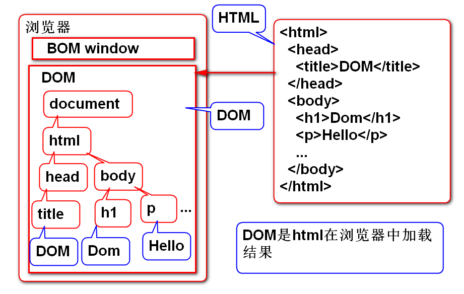
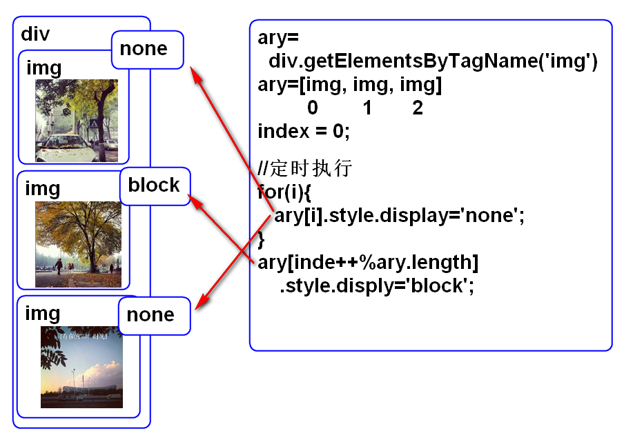

由JS的运行环境提供的对象(API), JS的运行环境是浏览器, 也就是由浏览器提供的对象.
浏览器提供两组对象: BOM 和 DOM
BOM 代表当前浏览器本身
浏览器对象:
DOM对象(document)是window对象的一个属性
这个属性代表 当前浏览器屏幕信息,如分辨率等.
案例:
//显示当前屏幕的分辨率:
function testWindow(){
var w = window.screen.width;
var h = window.screen.height;
console.log("Screen:"+w+"X"+h);
}
提示: 如果需要检查当前屏幕的分辨率, 动态的调整显示内容, 就可以使用这个属性.
代表当前浏览器的地址栏, 用于切换地址栏
案例:
//显示当前的地址栏URL信息
function showURL(){
var url=location.href;
console.log(url);
}
//跳转到指定的网页
function openDoc(){
location.href=
"http://doc.tedu.cn";
}
<input type="button"
value="刷新"
onclick="location.reload()">
<input type="button"
value="前进"
onclick="history.forward()">
代表浏览器地址栏中的历史记录.
案例:
<input type="button" value="前进"
onclick="history.forward()">
包含当前浏览器的元数据信息, 如: 厂商, 版本等
案例:
//在js中检查当前的浏览器版本信息
function checkUserAgent(){
var ua = navigator.userAgent;
console.log(ua);
var chromeReg = /chrome/i;
if(chromeReg.test(ua)){
console.log("这是谷歌浏览器");
}
}
每种浏览器的UserAgent都不相同, 是浏览器的身份证, UserAgent 经常用于检查JS所在的浏览器版本.
用与显示模态确认对话框, 其返回值是true/false
语法:
var value = confirm("今天你吃了吗?");
模态对话框显示时候, 会挡在浏览器窗口之前, 只能在处理对话框以后才能继续.
案例:
//使用确认框
function deleteObject(){
var del = confirm(
"你真的要删除吗?不可惜吗?");
if(del){
console.log("再见!");
}
}
浏览器提供了定时器功能, 其底层本质是线程. 定时器是并发执行的, 可以在网页中利用定时器处理并发问题.
由两种定时器:
按照一定固定间隔时间执行的方法.
window提供了两个方法用于处理固定间隔执行
语法:
var timerId = setInterval(方法, 间隔时间)
clearInterval(timerId);
案例:
<!DOCTYPE html>
<html>
<head>
<meta charset="UTF-8">
<title>定时器 定时执行</title>
<script type="text/javascript">
var id=[];//用于存储定时器的ID
function startTimer(){
//保存每个定时器ID
id[id.length] = setInterval(run, 1000);
console.log(id);
}
function run(){
console.log("Hello");
}
function stopTimer(){
//利用定时器ID清除定时器
for(var i=0; i<id.length; i++){
clearInterval(id[i]);
}
id=[];//清除没意义的定时器ID
}
</script>
</head>
<body>
<h1>定时器 定时执行</h1>
<input type="button" value="开始"
onclick="startTimer()">
<input type="button" value="停止"
onclick="stopTimer()">
</body>
</html>
案例, 在屏幕上显示动态时间:
<!DOCTYPE html>
<html>
<head>
<meta charset="UTF-8">
<title>定时器 定时执行</title>
<script type="text/javascript">
var id=[];
function startTimer(){
//利用if语句检查,保证只有一个定时器在执行
if(id.length==0){
id[id.length]=setInterval(showTime,1000);
}
}
function showTime(){
var now = new Date();
var str = now.toLocaleTimeString();
var div=document.getElementById("timer");
div.innerHTML=str;
}
function stopTimer(){
if(id.length!=0){
clearInterval(id[0]);
}
}
</script>
</head>
<body>
<h1>定时器 定时执行</h1>
<input type="button" value="Start"
onclick="startTimer()">
<input type="button" value="Stop"
onclick="stopTimer()">
<div id="timer"></div>
</body>
</html>
window提供了执行一次定时器, 用于处理延迟功能
API方法:
语法:
var timerId = setTimeout(函数, 延迟时间);
clearTimeout(timerId);
案例, 提示消息自动隐藏功能:
<!DOCTYPE html>
<html>
<head>
<meta charset="UTF-8">
<title>一次性定时器</title>
<script type="text/javascript">
function showInfo(){
var div = document.getElementById("info");
div.className="show";
//一次性定时器
setTimeout(function(){
var div = document.getElementById("info");
div.className="hide";
}, 2000);
}
</script>
<style type="text/css">
.show{
display: block; color: red;
padding: 5px;
width: 200px;
margin: 5px auto;
border: 1px solid #ddd;
/* 圆角 */
border-radius: 4px;
/* 阴影 */
box-shadow: 3px 3px 5px #ccc;
}
.hide{
display: none;
}
</style>
</head>
<body>
<h1>一次性定时器</h1>
<input type="button" value="显示"
onclick="showInfo()">
<div id="info" class="hide">
今天雾霾不错! 够味!!
</div>
</body>
</html>
提示: 为了解决页面内容耦合度问题(解耦)将显示样式和脚本以及页面内容进行了分类处理.
文档对象DOM:当网页被加载时，浏览器会创建页面的文档对象模型
文档对象是HTML在浏览器中的解释结果. 文档对象在浏览器中存在.
文档对象的引用是document, 文档对象是window对象的属性
文档对象结构:

DOM提供了如下操作 - 查找节点 - 读取节点信息 - 修改节点信息 - 创建新节点 - 删除节点
文档对象的每个节点(Node)都包含的属性称为通用属性
案例, 显示文档节点信息:
function testNode(){
var e = document.getElementById("msg");
//找到文档节点 e 元素中的文档节点
var txt = e.childNodes[0];
//显示各种节点信息
console.log("document:"+
document.nodeType+","+
document.nodeName);
console.log("element:"+
e.nodeType+","+
e.nodeName);
console.log("text:"+
txt.nodeType+","+
txt.nodeName);
}
元素的innerText 和 innerHTML 属性,可以读取和改变节点的内容:
innerHTML 可以用于向元素添加子元素或者清除元素内容
案例:
function insertHTML(){
var div = document.getElementById("demo");
var list='<ul>'+
'<li>Tom</li>'+
'<li>Jerry</li>'+
'</ul>';
div.innerHTML=list;
}
function insertText(){
var div=document.getElementById("demo");
div.innerText="<b>您好!</b>";
}
Dom API提供了通用的属性修改方法, 可以读写任何元素的任何属性.
API 方法:
案例:
function changeAttribute(){
var a = document.getElementById('doc');
var title = a.getAttribute('title');
console.log('当前:'+title);
a.setAttribute('title', 'TMOOC');
a.setAttribute('age', '88');
a.setAttribute('href','http://www.tmooc.cn');
a.innerHTML = "TMOOC";
}
阶段性完整案例:
<!DOCTYPE html>
<html>
<head>
<meta charset="UTF-8">
<title>DOM</title>
<script type="text/javascript">
function testNode(){
var e = document.getElementById("msg");
var txt = e.childNodes[0];
//显示各种节点信息
console.log("document:"+
document.nodeType+","+
document.nodeName);
console.log("element:"+
e.nodeType+","+
e.nodeName);
console.log("text:"+
txt.nodeType+","+
txt.nodeName);
}
function insertHTML(){
var div = document.getElementById("demo");
var list='<ul>'+
'<li>Tom</li>'+
'<li>Jerry</li>'+
'</ul>';
div.innerHTML=list;
}
function insertText(){
var div=document.getElementById("demo");
div.innerText="<b>您好!</b>";
}
function changeAttribute(){
var a = document.getElementById('doc');
var title = a.getAttribute('title');
console.log('当前:'+title);
a.setAttribute('title', 'TMOOC');
a.setAttribute('age', '88');
a.setAttribute('href','http://www.tmooc.cn');
a.innerHTML = "TMOOC";
}
</script>
</head>
<body>
<h1>Dom</h1>
<p id="msg">Hello</p>
<input type="button"
value="nodeDemo"
onclick="testNode()">
<div id="demo"></div>
<input type="button"
value="HTML"
onclick="insertHTML()">
<input type="button"
value="Text"
onclick="insertText()">
<p>
<input type="button" value="title"
onclick="changeAttribute()">
<a id="doc" href="http://doc.tedu.cn"
title="文档资源">文档</a>
</p>
</body>
</html>
dom提供了便捷的修改样式的属性
className class属性
通用属性修改方法完全能够替代两个属性, 但是这两个属性使用更加简洁.
利用class绑定样式效果时候, 可以实现样式与脚本的分离, 可以降低样式与代码的耦合度.
案例:
<!DOCTYPE html>
<html>
<head>
<meta charset="UTF-8">
<title>样式效果演示</title>
<script type="text/javascript">
function style1(){
var div = document.getElementById("div1");
//利用class属性修改元素的显示样式
div.className="alert";
}
function style2(){
var div = document.getElementById("div2");
//改变元素的内联样式
div.style.color="red";
div.style.border="1px solid #ddd";
div.style.borderRadius="4px";
}
</script>
<style type="text/css">
.alert{color: red; border:1px solid #ddd;}
</style>
</head>
<body>
<h1>样式效果演示</h1>
<input type="button" value="静静"
onclick="style1()">
<input type="button" value="莫莫"
onclick="style2()">
<div id="div1">我想静静</div>
<div id="div2">我想莫莫</div>
</body>
</html>
原理:

代码:
<!DOCTYPE html>
<html>
<head>
<meta charset="UTF-8">
<title>图片轮播</title>
<style type="text/css">
#slide img{ display: none; }
</style>
</head>
<body>
<h1>图片轮播</h1>
<div id="slide">
<img alt="" src="../images/01.jpg"
style="display:block">
<img alt="" src="../images/02.jpg">
<img alt="" src="../images/03.jpg">
<img alt="" src="../images/04.jpg">
</div>
</body>
<script type="text/javascript">
//写在 div 元素之后, 这样才能获取元素
var div = document.getElementById("slide");
var ary = div.getElementsByTagName('img');
var index=0;
setInterval(function(){
for(var i=0; i<ary.length; i++){
ary[i].style.display="none";
//ary[i].removeAttribute('style');
}
ary[index++ % ary.length].style.display='block';
}, 500);
</script>
</html>
重新实现课堂全部案例